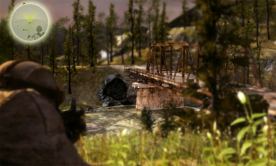

Depth of Field Image Effect
The Depth of Field image effect is a common post effect simulating camera lens systems. This results in sharp and unsharp areas based on each pixel's depth in comparison to a defined focal point.
As with the other image effects, this effect is only available in Unity Pro. Make sure to have the Pro Standard Assets installed.

Example for Depth of Field. Note how the camera focuses on the screen center (Focus on Center enabled).
Example for Depth of Field. Note how the camera focuses on the screen center (Focus on Center enabled).
Properties
| Quality | The quality level. Chose between Low (but fast), Medium (no halos, but low quality foreground blur) and High (properly blurs foreground objects). This setting has a big impact on overall performance. |
| Focal Distance | The distance to the focal point from the camera position in world space. This value will be automatically calculated if Focus on Center or Focus on This is enabled. |
| Focal Size | Increases the focal area if > 0. |
| Start Curve | Defines the intensity curve for the foreground blur. |
| End Curve | Defines the intensity curve for the background blur. |
| Focal Falloff | Global tweaking that affects start and end curves. |
| Center focus | Specify this to automatically focus on whatever the center of the camera is looking at. The script will automatically read out the depth buffer and calculate a proper focal distance. |
| Object focus | Specify this to automatically focus on whatever transform object has been dropped here. A proper focal distance will be automatically calculated. |
| Bokeh | Enable fake bokeh simulations. This will make bright objects bleed in a circular manner over neighbouring pixels. |
| Bokeh Cutoff | The threshhold for the bokeh simulation. |
| Background Blur | Settings for background blurring (most common usage of Depth of Field). |
| Blur iterations | The smoothness of the unsharp areas. |
| Blur Spread | The blur distance for the unsharp areas. |
| Foreground Blur | Settings for foreground blurring. |
| Spread | The blur distance for the unsharp foreground objects. |
| Iterations | The smoothness of the unsharp objects in the foreground. |
| Weight | The overall blur strength of the unsharp objects in the foreground. |
| Debug Blur Areas | Enable this to get the blending between sharp & unsharp areas displayed in the game view. |
Hardware support
Depth of Field works only on graphics cards with support for pixel shaders (2.0) or devices with OpenGL ES2.0 support. Eg. GeForce FX 5200 or Radeon 9500 and up. All image effects automatically disable themselves when they can not run on an end-users graphics card. Depth texture support is required.
Page last updated: 2011-01-12